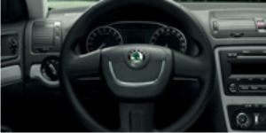

Izgled
Novi, ali ipak prepoznatljiv
Škoda Octavia doživljava veliku popularnost među vozačima već dugi niz godina.
Sve verzije modela su pravljene po uzoru na modernu tehnologiju i želje kupaca.
Nova Škoda Octavia kombi ne samo da je zadržala sve vrline predhodnih generacija kao što su kvalitetna izrada, dizajn koji ne zastarijeva i veliki unutrašnji prostor, nego je dobila i nove elemente dizajna, nove tehničke elemente i viši stupanj sigurnosti.
U stanju je da zadovolji sve želje i potrebe.
Još uvijek unikatna, ali ipak drugačija

Uvijek se pridržavamo izreke osnivača kompanije:
"Samo najbolje za naše klijente"
i zato
Vaše zadovoljstvo Škodinim automobilima smatramo našim najvećim uspjehom.
Samopouzdan nastup
Dinamična prednja strana sa dominantom maskom i novo kreiranim farovima, elegantne linije okvira, robustni stražnji branik sa svjetlima u ugrađenom spojleru, daju novoj Oktaviji još samopouzdaniji nastup.
Redizjanirani branik optički podiže prednost vozila, i na vrhu polako prati novo dizajniranu masku na otvoru za grijače. Gledano sprijeda, prednja svjetla sa natpisom „Octavia“ zasigurno će privući pažnju
Novi bočni retrovizori, ne samo da su donijeli bolje iskorištenu prednju stranu, nego imaju i funkciju koja ih elektronski sklapa ka unutra (elektro preklopivi). Zadnja svjetla su opremljena novim okvirom, ali nakon podizanja zadržali su za Škodu preopznatljiv C-oblik.
Paleta boja je obogaćena sa nekoliko novih metalik boja. Tako naprimjer Aqua plava i Arctic zelena odlično reflektiraju trenutne trendove u svijetu boja.
Udobnost
Dodatna udobnos
Funkcionalnost, prostranost, udobnost i elegantan izgled su dodatni atributi nove Škode Octavia kombi.
Enterijer možete birati iz široke palete boja i materijala koji odogovaraju Vašem ukusu.
Nudimo Vam mali popis onoga što vam Škoda Octavia Combi može ponuditi:
Dvije lampe za čitanje naprijed, i dvije lampe za čitanje nazad, dvozonski klima uređaj sa elektronskom regulacijom, grijači sjedišta, grijači prednjih i zadnjih stakala, automatski sklopivi retrovizori i centralno zaključavanje.
Ostala vrhunska tehnologija uključuje Swing i Bolero radio za CD-ove ili MP3, Sound system, Columbus i Amundsen satelitski navigacioni sistem.

Bolero radio
Bolero radio s CD, CD-MP3, CD-WMA player-om, utičnica za povezivanje sa „hands-free“ setom, 6,5` TFT Touch Screen i mnoge druge funkcije su samo dio opreme najviše kvalitete
Hill Hold Control
Elektronski sigurnosni sistem HHC (Hill Hold Control) vam omogućava sigurno pokretanje vozila ukoliko se nalazite pri nagibu ili brdu, bez rizika kretanja unazad i korištenja ručne kočnice.
Preklopivi retrovizori
Ako pritisnete tipku „lock“ na daljinskom upravljaču, retrovizori se automatski sklapaju, tako da ih štitite od mogućeg kvara i oštećenja dok je vozilo parkirano. Standardno su žmigavci integrirani u vanjske retrovizore.
Prtljažni prostor
Prtljažni prostor u modelu Octavija je jedna od njegovih najvećih prednosti. Njegov volumen za prtljag iznosi 580 litara. Ali, ukoliko sklopite stražnja sjedišta, njegov volumen se povećava na 1.620 litara.
Sigurnost
Sigurnost – područje u kojem ne prihvatamo kompromis
Povećanje standarda aktivne i pasivne sigurnosti predmet su stalne dorade i dogradnje kojoj se posvećuje najviše pažnje.
U području sigurnosti vozača i ostalih učesnika u saobraćaju ne pravimo kompromise, a u našim automobilima možete pronaći samo najnovije i najsavršenije tehnologije.
Napredni elektronski sistemi vožnje koji obuhvataju ESP, uključuju i ABS, EBV, MSR, ASR, EDS, HBA, DSR i ESBS, već sada su postali dijelovi opreme Octavia modela koji osiguravaju visoki nivo zaštite za putnike i ostale učesnike u saobraćaju.
Tyre Pressure Monitoring
TPM mjeri pritisak na gume na pojedinim dijelovima gume. Ako postoji potreba da se pritisak na jednoj gumi promijeni, onda na kontrolnoj tabli svjetli lampica
Treći naslon za glavu straga
Treći naslon za glavu na zadnjem sjedištu je jedan od mnogih elemenata pasivne sigurnosti u novom modelu Octavia. On značajno smanjuje rizik od ozlijede glave putnika koji sjedi u sredini straga
ISOFIX Pojasevi
Pojasevi za pričvršćivanje dječijih sjedišta nalaze se ne samo na vanjskim stranama stražnjih sjedišta, nego i na suvozačevom sjedištu. Sistem ISOFIX omogućava da dječije sjedište bude pričvršćeno direktno na tijelo automobila
Sigurnosni Pojasevi podesivi na 3 nivoa visine
Sigurnosni pojasevi podesivi po visini na 3 nivoa sastavni su dio osjećaja sigurne vožnje. Kada su aktivirani prednji zračni jastuci, sigurni pojas vas doslovno veže za sjedište
Oprema
Škoda originalna dodatna oprema
koda vozila su proizvedena da pruže maksimum udobnosti, praktičnosti i sigurnosti. U nastojanju da nova Škoda Octavua Combi bolje odgovori Vašim specifičnim zahtjevima, razvili smo niz originalne dodatne opreme.
Sva Škoda originalna dodatna oprema okarakterisana je dugim životnim vijekom, originalnim tehničkim solucijama i preciznim elementima.
Presvlake za sjedišta
Presvlake za sjedišta iz palete Škoda originalne dodatne opreme optimalno će zaštiti Vaša sjedišta od prljavštine i oštećenja, ali pored toga vam pružaju mogućnost da enterijer svoga vozila učinite unikatnim.
Glavni atributi nisu samo ekskluzivni dizajn, nego i visoki kvalitet i sigurnost.
Nekoliko visoko kvalitetnih presvlaka možete kombinovati sa različitim materijalima (tekstil, mikrofiber, sintetika, koža) i bojama (crvena, siva, antracit, crna). Također možete da birate između klasike, sportskog dizajna, komforta ili elegantnijeg dizajna
.png)
Nosač bicikla
Škodina originalna dodatna oprema pružit će Vam mogućnost da jos bolje iskorstite prostor Vašeg vozila i njegov kapacitet. Vrlo praktična pomoć je nosač za bicikla koji se fiksira na za to predviđeno mjesto, i time vam omogućava da transportuje 2 bicikla istovremeno

Kožni upravljač
Unutrašnjost nove Octavia Combi može biti dodatno opremljena sa mnogo sitnih dodataka, koji vožnju mogu učiniti još boljom. Tako npr. jednostavni, ali elegantni volan od kože

Unutrašnji nosač bicikla
Superiorni kapacitet prtljažnika nove Octavia Combi još više dolazi do izražaja upotrebnom unutrašnjeg nosača za bicikle, koji će vam omogućiti da smjestite dva bicikla u prtljažnik

Tempomat
Učinite duga putovanja ugodnijim i lakšim. Ukoliko imate tempomat, sve što trebate učiniti jeste da memorišete trenutnu brzinu kretanja vozila, i upravljačka jedinica će održavati memorisanu brzinu. Deaktivacija tempomata je isto tako jednostavna, dovoljno je da stisnete kočnicu ili kvačilo